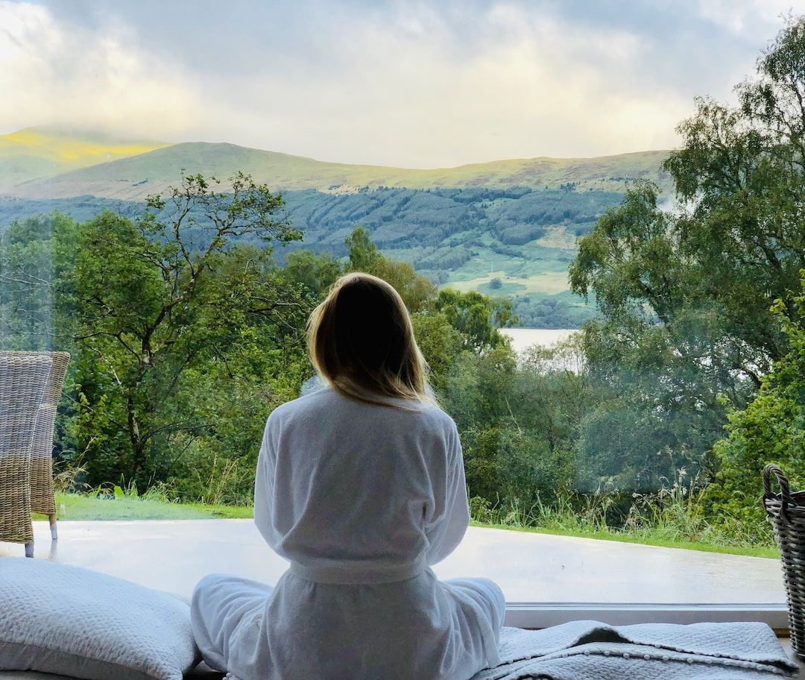

Answers · Everyday nervous system resets
Breath Breaks: A Five-Minute Reset for Your Mind and Body
Between work, the kids, the house and everything else that asks for you during the day, a quiet moment can start to feel like a luxury you'll get to later. A breath break is the simplest way I know to stop waiting for later: a few minutes, set aside on purpose, where the only thing you do is breathe.

What a breath break is
Think of it like a smoke break, without the smoke. You step away from what you're doing, you let your attention land on your breath, and you give your whole system a few minutes to reset. On a typical work break your mind keeps buzzing with tasks and deadlines; on a breath break you let the to do list wait, and you come back clearer than you left.
Why slow breathing calms you down
When you breathe slowly and deliberately, especially with a longer exhale than inhale, you activate the parasympathetic side of your nervous system, the part responsible for rest and digestion. It works against the fight or flight response that so many of us live in all day without noticing.
A 2018 review of slow breathing research in Frontiers in Human Neuroscience linked it with higher heart rate variability, more relaxation and less anxiety. A 2023 Stanford study in Cell Reports Medicine found that five minutes a day of breathwork focused on long exhales improved mood and lowered breathing rate more than the same five minutes of mindfulness meditation. You don't need a special technique to feel it; you need a few minutes and a little intention.
What a breath break gives you
- Less stress in the moment. A few slow breaths are one of the quickest ways I know to turn the volume down on a stressful day.
- Better focus. When you return to your work after a few minutes of breathing, it's easier to think clearly and stay with one thing at a time.
- Steadier emotions. In my experience, mindful breathing builds the space between what happens and how you react, so the day's pressure doesn't run you.
How to take a breath break
- Pick your moments. Two or three times a day works beautifully: mid morning, after lunch and the moment you notice yourself tensing up.
- Step away. Leave your desk or put your phone face down so the break is a real break.
- Lengthen the exhale. Breathe in through your nose for a count of four and out through your mouth for a count of six or eight. Let your shoulders drop on every exhale.
- Stay for five to eight minutes. If that feels long, start with two and let it grow.
Take it outside when you can
Breath breaks work anywhere, and they work even better in nature. Imagine what would happen if all of us stepped outside for a few minutes, a few times a day, to breathe in fresh air. A 2019 University of Michigan study found that twenty to thirty minutes in a place that felt like nature lowered people's cortisol, the stress hormone, faster than the day's natural drop. Whenever I can, I take mine outside, and you can find your own version on a balcony, in a park or simply at an open window.
Keep exploring
- How do I regulate my nervous system day to day?
- What are the benefits of grounding outside?
- Why does everything feel so hard when life looks fine?
Common questions
How long should a breath break be?
Five to eight minutes is a lovely target. If that feels like too much, two minutes of slow breathing still makes a difference.
What's the best breathing pattern for stress?
Any slow pattern where the exhale is longer than the inhale, such as in for four and out for six or eight. A long exhale is a gentle signal to your body that it's safe to relax, and a 2023 Stanford study found exhale-focused breathing improved mood in just five minutes a day.
How often should I take a breath break?
Two or three times a day is a good rhythm, plus any time you notice your jaw clenching, your shoulders rising or your thoughts speeding up.
Sources
- Zaccaro, A., et al. (2018). How breath-control can change your life: a systematic review on psycho-physiological correlates of slow breathing. Frontiers in Human Neuroscience.
- Balban, M. Y., et al., Stanford University (2023). Brief structured respiration practices enhance mood and reduce physiological arousal. Cell Reports Medicine.
- Hunter, M. R., Gillespie, B. W., & Chen, S. Y., University of Michigan (2019). Urban nature experiences reduce stress in the context of daily life based on salivary biomarkers. Frontiers in Psychology.
This article is for education and everyday wellbeing; it isn't medical advice. If you're struggling with your sleep, mood or health, please talk with a licensed professional. Keep reading: all answers · the free community · about Tamara Rose